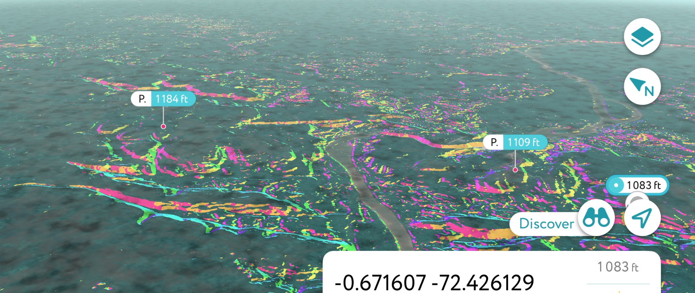
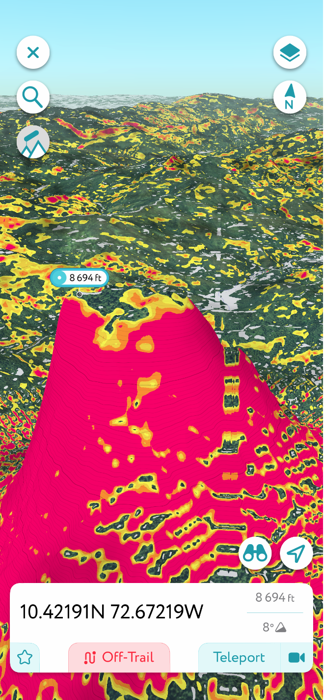
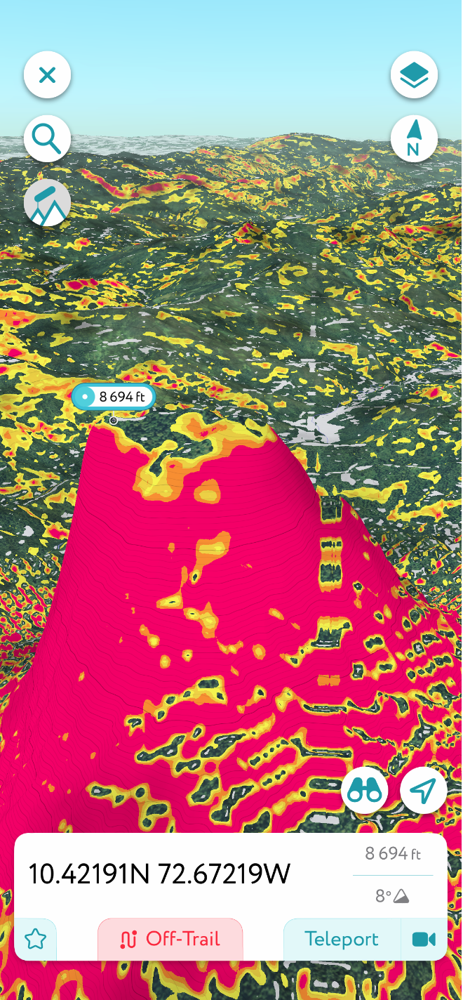

🛡️ Geodetic Codex Corridor Model – V4 Expansion & LiDAR Flythrough Addendum
Monte Verde Region Orientation

The fly-through begins in the Monte Verde region of southern Chile (~38°S), where early settlement and highland observatory potential first appear along the 72.66°W corridor. The PDF mvo-region.pdf provides LiDAR and slope-based views from the corridor base south of the equator. Terrain slices show repeating elevation nodules and slope-scarring suggestive of hydrodynamic control—possibly as part of an ancient infrastructure grid, not merely natural topography. Key points such as CG13562 and the MVO fulcrum show mirrored terrain logic with Meadow House, supporting the corridor’s predictive elevation model.
Equatorial Uplift and the CO42 Basin
By slide ~27 in corridor1-lr.pdf, the fly-through crosses into equatorial terrain. Here, a significant transition occurs at 10.4219°N, revealing radial terraces, slope symmetry, and elevation consistent with Codex amphitheater observatories. The CO42 site—atop a trihedral basin—appears as a hydrological and celestial mirror to Meadow House Observatory. This mid-corridor uplift may be the geometric and harmonic fulcrum of the entire Codex model. Its 502m elevation and amphitheater slope markers present a compelling case for planetary-scale architectural foresight, now rendered visible via multi-angle LiDAR and hillshade mapping.
 

Corridor Continuity to Caribbean Latitude
The continuation shown in corridor2-lr.pdf brings the viewer north of the equator to ~9.5°N and eventually to 20°N across the Caribbean basin. It then arcs southward to terminate at CO42, offering a mirrored passage of the original southern trajectory. Throughout this corridor segment, slope aspect coloration and terrain linearity suggest engineered patterns and altitude carving—possibly for long-term glacial meltwater control. Circular features such as CG13576 reinforce the theory of hydrological lensing nodes. These structures, whether naturally enhanced or intentionally engineered, reflect a strategic use of harmonic geography across cultures and epochs.
📎 Download Full Statement of Findings: Geodetic Codex Node Release – V4 Corridor Integrations & Nomenclature Refinements

← Back to Portal • This page is part of ChiRIPP v1 public tools.